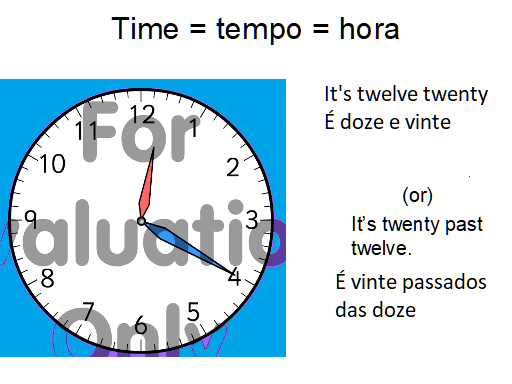

Nós, usamos 12 horas em todos os nossos exemplos, apartir daqui.
A tradução do inglês:
12:20 p.m.
"It's twelve twenty" = "São doze e vinte"
"It´s twenty past twelve" = "são vinte passados das doze"
2:20 p.m.
"It´s two twenty" = "são duas e vinte"
"It´s fourteen twenty" = "são quatorze e vinte"
"It´s twenty past fourteen" = "são vinte passados das quatorze"
"It´s twenty past two" = "são vinte passados das duas"

Aqui, vamos relembrar a primeira lição, nos dividimos o relogio
ao meio na vertical, e os numeros a direita são chamados
numeros (minutos) passados da hora(past),e os da esquerda
são chamados numeros(minutos) que faltam para chegar a hora.
(to),
aqui temos:
12:20
"doze e vinte","vinte passados das doze".

 Continuar
Continuar